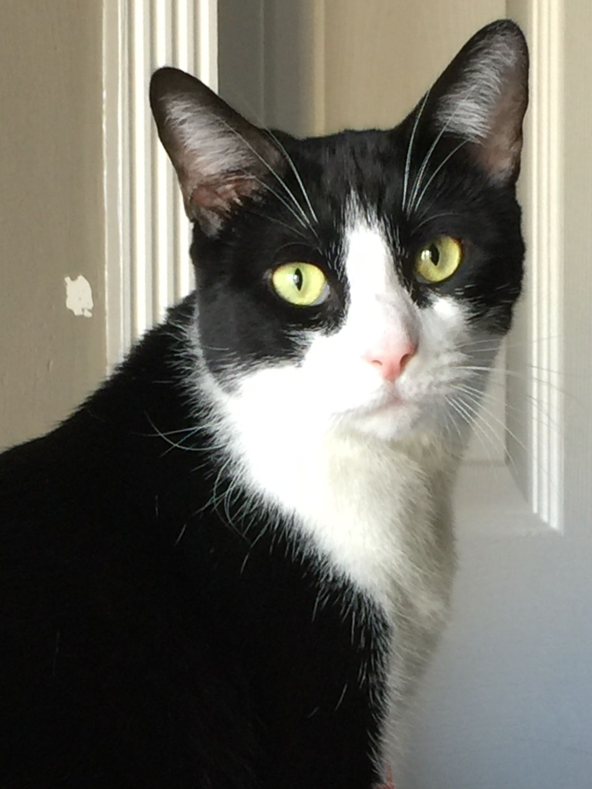

GATOS DE DIFERENTES TIPOS
 El gato tuxedo no es una raza específica, sino más bien una descripción de un patrón de pelaje
que se encuentra en varios tipos de razas de gatos.
Así, el término "tuxedo" se utiliza para referirse a gatos que tienen un patrón bicolor con una apariencia que se asemeja a un esmoquin, con un pelaje
predominantemente negro con áreas blancas en la cara, el pecho, el vientre, las patas y a veces en la punta de la cola.
Si bien este patrón se ha asociado tradicionalmente con el aspecto elegante de un caballero, también está presente en las hembras.
HISTORIA DE EL GATO TUXEDO
El patrón de color tuxedo no tiene una historia clara o un punto de origen definido.
Los gatos tuxedo pueden encontrarse en razas como el gato doméstico común, el maine coon
o el british shorthair, entre otros. Cada uno de estos gatos tiene su propio origen e historia,
pero comparten el patrón de pelaje característico que los define como "tuxedo" o esmoquin.
Sí sabemos, sin embargo, que los gatos tuxedo han gozado de un lugar especial en la literatura
(por ejemplo, Alicia en el País de las Maravillas o El gato negro, de Allan Poe) y también en la pantalla.